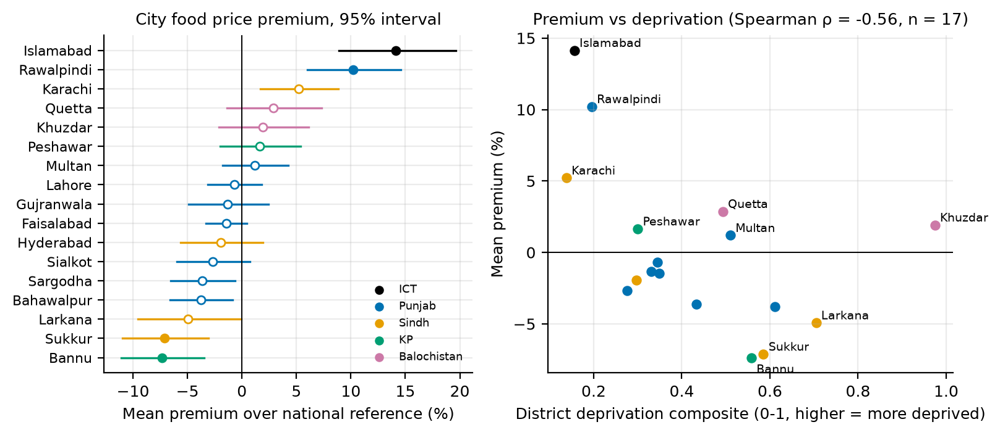
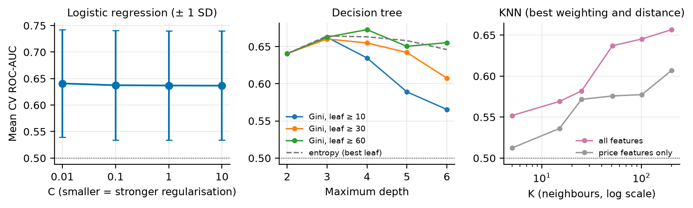
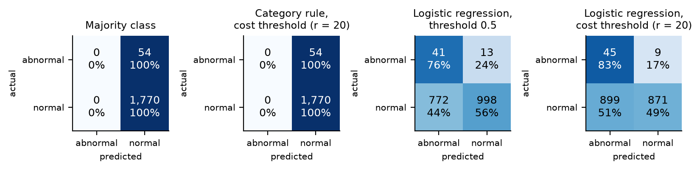
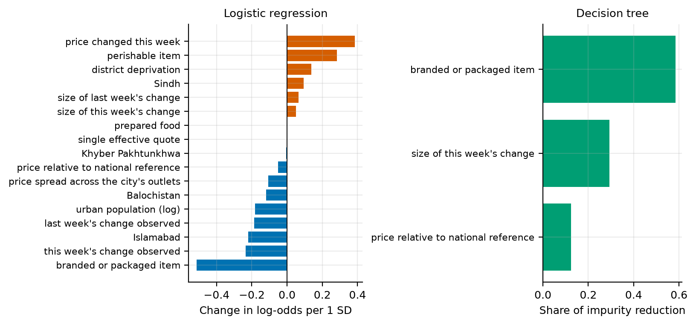

Pakistan's Sensitive Price Indicator is reported each week as one national figure, but the Pakistan Bureau of Statistics (PBS) also publishes the prices behind it for 51 items in 17 cities. That city detail could show whether some places pay persistently more for food, whether those places are the ones least able to absorb it, and whether sudden local price moves can be seen coming. The first two questions concern access to food (SDG 2.1) and inequality (SDG 10); the third concerns functioning food markets and timely market information (SDG 2.c). Milestone 02 explored all three. This milestone builds and evaluates the first classifiers for the third.
Table 1. Data sources merged into the master dataset.
| Source (all PBS) | What it provides | Coverage |
|---|---|---|
| PBS weekly SPI annexure | City-item prices (minimum, average, maximum) | 27 weeks, 2025-05-15 to 2026-09-24 |
| PSLM district survey | Deprivation: food insecurity, illiteracy, schooling, water | 2019-20 |
| Census, Table 1 | Total and urban population by district | 2023 |
| CPI (urban food) | Deflator only | Monthly |
Each weekly annexure is an Excel sheet with three city tables stacked on top of each other. Our Milestone 01 parser read only the first table and so reported seven cities; the corrected parser reads all three, giving 23,409 rows (17 cities, 51 items, 27 weeks, of which 32 items are food). We validated every week against PBS's own national columns. The cross-city minimum and maximum match PBS's national figures in all 1,377 item-weeks, and the geometric mean of city prices reproduces PBS's national average in all of them, so we use the geometric mean as the national reference price.
Item categories, census population, district deprivation and the urban food price index were joined on item, city and month, each by a many-to-one join whose row count we checked. Missing values were flagged rather than imputed. 83 rows where a city never quotes an item are kept as missing. Weekly changes exist only between releases a week apart, and gaps in the published archive leave 44% of rows without a previous week. Releases after 24 September 2026 were downloaded but not opened; they are reserved for the new-data milestone.

For each city we averaged its log price relative to the national reference over the 32 food items. Islamabad pays 14% above the reference and Rawalpindi 10%, while Sukkur and Bannu pay about 7% less. Four cities remain significant after a Bonferroni correction for 17 tests. The pattern persists. In 93% of 3,269 cases where a city was above the cross-city median for an item, it was still above it the following week.
Perishables vary more across cities than storable staples (mean coefficient of variation 0.16 against 0.11; one-tailed Welch p = 0.037). A rank-based test gives p = 0.057, and each group has only about ten items, so we treat this as suggestive.
The cities paying the highest premiums are mostly the least deprived (Spearman ρ = -0.56, p = 0.02, n = 17). Khuzdar and Quetta are the exception, combining above-reference prices with the highest food insecurity in the panel. Data quality also varies by place. The share of records in which every quote PBS collected was identical ranges from 20% in Karachi to 91% in Sukkur.
This report tests H3. H1, H2 and H5 were examined in Milestone 02, and the formal H4 audit is planned for Milestone 04.
Each row is one city, one food item and one week t. The target is 1 when the item's price in that city changes between week t and the following week by more than the 90th percentile of that item's non-zero weekly changes. We use non-zero changes because 75% of weekly food price changes are exactly zero; for 13 of the 32 food items an ordinary 90th percentile would be zero and every change would count as abnormal. The percentiles are fitted on the training weeks of each split and fold, so the evaluation weeks never help define their own labels. Items with fewer than five non-zero changes in training get no label. Because a label needs a release exactly one week later, only 15 of the 27 weeks can be labelled.
All features are known in week t. Recent movement is described by whether the price changed this week and by the size of this week's and last week's changes. When the previous week was not published, the change is set to zero and a separate indicator records that it was unobserved. Position relative to other cities is the log price against the national reference. Data quality enters through the price spread across a city's outlets and whether only one effective quote was recorded. Item type is a set of category indicators (perishable, branded or packaged, prepared food; storable staples are the reference), and place is described by province indicators, log urban population and the district deprivation composite. We left out one indicator per item because, with about 200 positive rows, it would overfit and dominate the distances used by k-nearest neighbours.
Table 2. Benchmarks and models, why each suits the problem, and the settings searched and chosen in cross-validation.
| Model | Why it suits this problem | Grid searched | Chosen in CV |
|---|---|---|---|
| Majority class | Shows how misleading accuracy is when events are rare | – | – |
| Category base-rate rule | Encodes the view that perishables move more; a model must beat it to be worth using | – | – |
| Logistic regression | Gives probabilities for cost-based thresholds and odds ratios an analyst can read; stable with few positives | C ∈ {0.01, 0.1, 1, 10} | C = 0.01 |
| Decision tree | Produces if-then rules a price committee can apply without software, and captures interactions | Gini or entropy; depth 2-6; minimum leaf 10, 30 or 60 | Gini, depth 2, leaf ≥ 60 |
| K-nearest neighbours | Tests a different idea: similar city-item situations behave alike | K from 5 to 201; uniform or distance weights; Euclidean or Manhattan; all or continuous features | K = 201, distance-weighted, Manhattan, all features |
Logistic regression and the tree use balanced class weights, so that the rare abnormal rows carry as much total weight as the normal ones. Logistic regression inputs are standardised and k-nearest-neighbour inputs are scaled to 0-1; both scalers are fitted on the training rows of each fold. All models were fitted with scikit-learn (Pedregosa et al., 2011).
We train on the first 11 labelled weeks (2025-07-17 to 2026-03-26) and test on the last 4 (2026-04-02, 2026-06-04, 2026-08-13, 2026-08-20). After labelling, training has 4,560 rows with 135 abnormal moves and the test set has 1,824 rows with 54. That is a 71%/29% split by rows, and the base rate is 3.0% in both parts. A row in week t takes its label from week t+1, so any training row whose t+1 falls in an evaluation week is removed. Here that purges the last training week, and the final models learn from 10 weeks.
We did not use a random stratified split. The same 17 × 28 city-item series appear every week and items in the same week share shocks, so a random split would let the model learn from later weeks to predict earlier ones, which no price monitor could do. Stratification exists to keep the rare class present in every part. We checked it directly. Every validation week holds between 16 and 28 abnormal moves and the test set 54. Balanced class weights then keep the rare class from being ignored during training.
Cross-validation uses only labels that end before the test period, which leaves 10 development weeks. Within them, fold 1 trains on the first five labelled weeks and validates on the sixth, and each later fold adds one week, giving 5 folds. Label percentiles, scalers and models are refitted inside every fold. Each validation week has only 16 to 28 abnormal moves, so we report the mean and standard deviation across folds.

Settings were compared by mean validation ROC-AUC, which ranks predictions without needing a threshold. When several settings fell within one fold-SD of the best, we chose the simplest. The strongest regularisation (C = 0.01) did best for logistic regression. A depth-2 tree was within one SD of the best depth-4 tree, so we kept the shallower one. KNN peaked at the largest K in the grid.
Two checks support the design. Ordinary shuffled five-fold cross-validation on the training rows gives a mean AUC of 0.71 for logistic regression, against 0.64 with forward chaining, which suggests random folds would have overstated performance. When we refit the final logistic model on randomly permuted training labels 200 times, the test AUC averages 0.50, and none of the permutations reaches the real AUC.
Table 3. Test-set metrics for every model (threshold-based metrics at 0.5; ROC-AUC with a bootstrap 95% interval) and the cross-validation ROC-AUC used for model selection.
| Model | Accuracy | Precision | Recall | Specificity | F1 | Test ROC-AUC [95% CI] | Test PR-AUC | CV ROC-AUC (mean ± SD) |
|---|---|---|---|---|---|---|---|---|
| Majority class | 0.97 | 0.00 | 0.00 | 1.00 | 0.00 | 0.50 | 0.03 | 0.50 ± 0.00 |
| Category base-rate rule | 0.97 | 0.00 | 0.00 | 1.00 | 0.00 | 0.71 [0.66, 0.75] | 0.05 | 0.62 ± 0.11 |
| Logistic regression | 0.57 | 0.05 | 0.76 | 0.56 | 0.09 | 0.69 [0.64, 0.75] | 0.05 | 0.64 ± 0.10 |
| Decision tree | 0.87 | 0.03 | 0.13 | 0.89 | 0.05 | 0.61 [0.58, 0.65] | 0.04 | 0.64 ± 0.12 |
| K-nearest neighbours | 0.97 | 0.00 | 0.00 | 1.00 | 0.00 | 0.56 [0.49, 0.64] | 0.04 | 0.66 ± 0.13 |

We reject H0 for logistic regression on these four test weeks. Its test ROC-AUC is 0.69 [0.64, 0.75], and it stays above 0.5 when each week is scored separately, ranging from 0.54 to 0.75. The decision tree's interval also excludes 0.5; that of k-nearest neighbours does not. The bootstrap interval treats rows as independent, so the per-week check is the more trustworthy evidence, and four weeks are too few to call the result general (Section 9).
No model clearly beats the category rule. In cross-validation logistic regression averaged 0.64 against 0.62 for the rule, but won only 3 of the 5 folds. On the test weeks the rule was slightly ahead, and the bootstrap interval for the difference between them includes zero. A logistic model given only the three category indicators reaches a test AUC of 0.71, slightly above the full model, so recent price movement adds little to knowing what kind of food it is. Even logistic regression finds an abnormal move in only about 5% of the rows it flags.
Accuracy is misleading here. The majority class is 97% accurate while catching nothing, and the category rule and k-nearest neighbours almost never produce a score above 0.5, so at that threshold they look the same. Balanced class weights push logistic regression the other way. At 0.5 it flags 813 rows to catch 41 of 54 abnormal moves. K-nearest neighbours had the best cross-validation mean but the widest spread, and it fell to 0.56 on test. With about one abnormal row in 34, most small neighbourhoods contain none. The category indicators also count as much in the distance as real price changes, and many rows are identical. Only very large neighbourhoods give a usable score, and those amount to a smoothed local base rate.
We have in mind a PBS analyst or a district price control committee deciding where to send inspectors next week. A false negative is an abnormal move nobody was warned about. When the move is a jump in tomatoes, onions, flour or ghee, no inspection or public notice happens and households absorb it, and households in more deprived districts spend a larger share of their income on food.
A false positive is an unnecessary inspection or watch-list entry. Each one costs staff time and goodwill with traders, and a system whose alerts are mostly wrong soon stops being trusted.
Following Provost and Fawcett (2013), we give correct decisions zero cost, a false alarm a cost of 1 and a missed move a cost of r, placing each cost in one cell only to avoid counting it twice. Flagging a row whose chance of being abnormal is p pays when p·r > 1 − p, so for an average row flagging everything beats flagging nothing only once r exceeds about 33. The value of r is a judgment for decision-makers, so we vary it. For each r the threshold is chosen on the cross-validation predictions and then applied to the test weeks.
Table 4. Test cost per 1,000 city-item-weeks, in units of one false alarm, for each cost ratio r (thresholds chosen in cross-validation).
| Policy | r = 5 | r = 10 | r = 20 | r = 35 |
|---|---|---|---|---|
| Category base-rate rule | 148 | 296 | 592 | 637 |
| Logistic regression | 148 | 430 | 592 | 709 |
| Flag nothing | 148 | 296 | 592 | 1036 |
| Flag everything | 970 | 970 | 970 | 970 |
For r up to 10, issuing no alerts is cheapest. At r = 20 logistic regression and flagging nothing cost the same to the nearest unit, and at r = 35 the category rule is cheapest. In these test weeks, alerting pays only when a missed move is judged to be worth about 20 or more needless inspections, and even then the simple rule does at least as well. If inspectors can check only the 50 highest-scoring city-items each week, logistic regression puts 20% of the abnormal moves in front of them, with 5.5% of checks finding one, against 3.0% for random checks.

Table 5. Logistic regression errors at the r = 20 threshold by item category and city deprivation tercile.
| Group | Abnormal moves | Missed (FN rate) | False-alarm rate |
|---|---|---|---|
| Perishable | 41 | 12% | 84% |
| Storable staple | 13 | 31% | 46% |
| Branded or packaged | 0 | – | 0% |
| Low deprivation | 16 | 31% | 38% |
| Mid deprivation | 18 | 11% | 45% |
| High deprivation | 20 | 10% | 69% |
Table 5 shows where the errors fall. Branded and packaged goods had no abnormal moves in the test weeks and are never flagged, while about 84% of normal perishable rows are flagged. More deprived cities receive more false alarms and fewer misses than less deprived ones. The error analysis also shows what the model cannot see. Every abnormal move it missed at this threshold came after a week with no observed price change. Quetta's broken basmati rice in the last test week is one such case, with a flat price followed by a fall beyond the item's usual range. The most confident false alarms are perishables in Sukkur, Bannu and Larkana that had just changed price on a single effective quote and then stayed put, such as onions in Larkana. A single shop's quote can move without the market moving, which ties model errors to the data-quality gap noted in Section 2. The two earlier test weeks had twice the abnormal rate of the August weeks; both fell within two weeks after an Eid holiday (21 March and 27 May 2026; APP, 2026), which is a possible but untested explanation.

Both models put item type first. In the logistic model, a one-SD step towards a branded or packaged item multiplies the odds of an abnormal move next week by 0.60, while a price change this week multiplies them by 1.47 and being perishable by 1.33. The size of this week's change gets a small coefficient because it is correlated with whether the price changed at all, and the two share the credit. The tree uses the same two ideas, splitting first on branded or packaged items and then on this week's change. Its four leaves read as rules (Table 6).
Table 6. The decision tree's leaves as rules, with each leaf's actual abnormal rate in the training weeks.
| Leaf (if ...) | Training rows | Abnormal rate |
|---|---|---|
| not branded or packaged; this week's change above 1% | 798 | 6.9% |
| not branded or packaged; this week's change at most 1% | 2,742 | 2.7% |
| branded or packaged; priced below the national reference | 287 | 1.7% |
| branded or packaged; priced at or above the national reference | 733 | 0.0% |
The root split shows how the tree chose. Without weights, separating branded items reduces Gini impurity only from 0.058 to 0.057, because abnormal rows are so rare. With balanced weights the root has a Gini of 0.5, and the same split lowers it to 0.46, the largest reduction available.
The test set covers four weeks and 54 abnormal moves, and rows within a week share shocks, so every test figure has wide uncertainty and the bootstrap intervals understate it. All results describe associations, not causes. Deprivation data come from 2019-20 district totals that include rural areas, population and deprivation are constant within each city, and Islamabad and Rawalpindi are scored separately although they form one market. The 90th-percentile label is a convention, the archive gaps limit how many weeks can be labelled, and the 17 urban SPI cities do not represent rural markets. The signal is modest throughout.
Milestone 04 will compare random forests and gradient boosting with today's benchmarks under the same cross-validation and cost analysis. It will test H4 by comparing recall, miss rates and calibration across provinces, city sizes and deprivation terciles, and will examine whether weighting misses in deprived districts more heavily, or using group-specific thresholds, changes who is protected and at what cost. Finally, the frozen model will be scored on the unopened post-cutoff weeks, then retrained on the earlier part of the new data and tested on the later part.
Associated Press of Pakistan (2026, 19 March). Eid-ul-Fitr on Saturday as Shawwal moon not sighted. app.com.pk.
Pakistan Bureau of Statistics. Weekly Sensitive Price Indicator, annexure workbooks, weeks ended 2025-05-15 to 2026-09-24. pbs.gov.pk.
Pakistan Bureau of Statistics. Pakistan Social and Living Standards Measurement Survey 2019-20, District Level: Tables 2.14(a), 2.15, 7.1, 9.1.
Pakistan Bureau of Statistics. 7th Population and Housing Census 2023: Table 1, district results.
Pakistan Bureau of Statistics. CPI (Urban) group-wise indices, base 2015-16; Monthly Review on Price Indices, August and September 2026.
Pedregosa, F. et al. (2011). Scikit-learn: Machine learning in Python. Journal of Machine Learning Research, 12, 2825-2830.
Provost, F. and Fawcett, T. (2013). Data Science for Business. O'Reilly, Chapters 7 and 8.